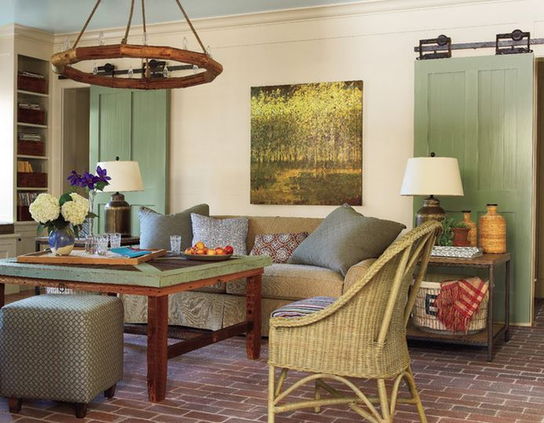

.png)
.PNG)
.PNG)
.PNG)
.PNG)
.PNG)
.JPG)
.JPG)
.PNG)
.PNG)


source
So where were we? Oh yes…I remember now. We were at the Southern Living Idea Farmhouse in Senoia, looking out across the pond that is bordered with landscaping.
I told you we would talk about the house over on the other side of the pond…this house:
It’s the one on the far right, the one with the white porch, that I want us to chat about today.
 That Idea House was a brownstone that Southern Living built for their 2010 Idea House. Yep, the Farmhouse Idea House is literally “across the pond” from it. 🙂 Do you remember reading about the brownstone back in 2010?
That Idea House was a brownstone that Southern Living built for their 2010 Idea House. Yep, the Farmhouse Idea House is literally “across the pond” from it. 🙂 Do you remember reading about the brownstone back in 2010?
It was modeled after the style of townhomes you would find in historic places like Savannah and Charleston. It was designed by my favorite firm, Historical Concepts, and the interiors were decorated by Newnan resident, Jamie McPherson. I loved the historic feel that they were able to bring to the rooms (even though it was new construction.)
The wallpaper, the blue and green color scheme, the floral fabrics, and the blue ceilings all conveyed that “old South” feel.
And the light fixtures! Oh my gooooooodness!! Just gorgeous.
How about a long hot soak in that bathtub? (But I think I would close the curtains before I stood up in front of those three windows…especially now that there are neighbors in the area!)
You can see more of the rooms decorated as they were for the Idea House tours on the Southern Living site here. I mentioned in our last post that the 2012 Idea Farmhouse has been sold and a family is residing in it, but what has become of this brownstone in charming Senoia?
Take a look…
There’s our beautiful foyer with her hardwood floors, pretty wallpaper, and period perfect lights just waiting for someone to move in. Yes, the Idea House is for sale. With 5 bedrooms, 4 full baths, and almost 5,000 sq. feet of living area, the listing price is $999,000.
Here is the living room today. Just look at all the architectural features, and they even left the drapes for you. 🙂
The kitchen looks much larger in this photograph than it did in the magazine feature. Doesn’t it to you?
The master bedroom still has its drapes as well (and those fabulous transom windows.)
And your bath is still waiting on you. You can see the farmhouse through the windows there, but this must be an old photo because there are homes now built around it.
Well are you ready to make this your dream home? Maybe I need to show you around the town of Senoia to convince you. We were there on a Sunday afternoon, and it was relatively quiet that day.
Doesn’t it look like just the perfect old fashioned small town?I really wanted to go in this store, but unfortunately it was not open on Sunday.
Here is a closer look at those flowers in front of the shop window, since I know you want to see them. 🙂
I was able to get a photo of the items in one of the windows.
This shop with the clever words was open though.
It was filled to the brim with all sorts of things for your home.
Across the street from it is a large brick building that holds the offices for Southern Living’s Hotel Collection. I don’t think you can see this very well, but there is a fudge and sweet shop on the bottom floor. Above that is a sign for a dentist’s office. I laughed out loud when I read that! Too funny.
There was one shop I had read about before we left home, and I really wanted to go in it. Dummy me forgot to check the hours it was open, and after spending too long in The Main Street Fudge Shop…
We arrived 5 minutes after closing at Beyond the Door. (They really were closed. This photo is from their facebook page.)
You need to check them out because it looks like a very unusual shop with a million things you won’t find anywhere else. I was very disappointed they weren’t open (so I ate a praline from the fudge shop. 🙁 )
beyondthedoorsenioa.blogspot.com
beyondthedoorsenoia.blogspot.com
The old fashioned appeal of downtown Senoia is so convincing that many movies have had scenes filmed there – Fried Green Tomatoes, Driving Miss Daisy, and the 2011 version of Footloose – to name just a few. Parts of season 3 and 4 from the AMC series, The Walking Dead were filmed there (with shop windows blackened out for zombie walking scenes!) One of the old brick buildings now houses The Official Walking Dead Store – a fun place for fans of the series.
And look what other shop they have… It was hard for me to resist everything there!
If that doesn’t convince you, I have one more thing that might (and if you were my mom it would definitely make your heart beat faster! 🙂 )
They are having a citywide yard sale in a couple of weeks! If you are addicted to yard sales you won’t want to miss it. I am sure there will be a lot of great bargains.
So now are you ready to buy the Southern Living Idea House in Senoia?
We’ll all be sure to come visit. 🙂


.PNG)
There are also certain inherent problems with
such dating. He raps about trying to be a good
father (‘Be’) and the importance of raising a family (‘The
Remedy’). Little description is required and you might as well go pre-purchase your advance tickets now, because you know you’re going
to these dozen for sure.
I’m sorry the shops were closed. MANY things in my home are from Beyond the a Door and The French Market. Come back this summer any day but Sunday or Monday and they’ll be open. Make sure to drive up to Tyrone (about 20 min north) and go to Circa Antiques and Déjà Vu consignment store. You won’t regret it! I would also recommend coming on a day when Scott’s in open. WIN WIN!
The ladies from my church are having a Girls Day Out on the 26th and we are going yard sale-ing. I just may have to tell them about this yard sale. It just may be worth the 2 hour drive! Thanks for sharing!
No worries Kelly, that is what it is all about making sacrifices. Not much longer. My Easter dinner is going to consist of French fries and chocolate. We will be going to the 50th Anniversary of the Mustang in Concord, NC. Hope there is a little something the girls can find to get into. I am sure we can find a little something. Hehehehe. Until your next post. Stay sweet, and have fun in what ever you find. 🙂
OMG girl you are killing me!!! I gave up chocolate and french fries for Lent so between these last several post I have really been craving them both. LOL. I love this town and these homes. I would never leave the shops. I love everything about this town. This one is gonna be on my bucket list. Thanks so much for sharing. <3
————————————————————-
I didn’t mean to make this so hard on you, Cindy! Giving up my two favorites – chocolate and French Fries would be like a death sentence to me!!! Glad to know I could at least contribute to your bucket list since I am making your Lent sacrifices so difficult. 🙂
Kelly
SENOIA!!!!! what a wonderful place! I have enjoyed these posts so much and to have 2 Southern Living homes in the same town….amazing! You do a wonderful job of bringing the most interesting places and beautiful homes to all of us. Thanks!
————————————————————
I know, how in the world did that little town end up with TWO Idea Houses? It probably didn’t hurt that an investor wanted to bring his film studio there, and it probably didn’t hurt that nearby Peachtree City is home of the architectural firm, Historical Concepts that worked on both projects, and it probably didn’t hurt that the town had such a nostalgic appeal. Senoia has really taken off in the last few years.
Thank you for taking the time to read and comment here, Martha.
Kelly
Kelly
I love the exterior of this one. The interior isn’t my taste but I agree, the details make it appear to be an authentic historic house.
I would love to attend the city wide flea market, that would be fun. Of course we’d have to stop in the candy shop as well.
Great tour.
Karen
————————————————————-
A lot of the details that give it that authentic look can be attributed to the design firm of Historical Concepts. They do such wonderful work. I also think the choice in lighting really added to the place.
You are right about having to stop in the candy shop. Even if you found no bargains at the yard sale, you could be happy with their fudge. 🙂
Kelly
Such a charming community! I wish I could see the remainder of the kitchen area in the ‘brownstone’- since there is no picture of appliances…where is the refrigerator? I also note a lack of upper cabinets . But with the butler pantry off the kitchen area I guess that would be where you store plates, glasses?? Are there drawers on the island? Silly me…like I’m going to buy it! 🙂 Just wondering, I guess. (Beautiful millwork, too.)
————————————————————–
The stove and oven are under that custom made hood, and the sink and dishwasher are in the island I believe. I am guessing the refrigerator is opposite the island on the wall that is not shown. They called the butler’s pantry, a “scullery” and you are probably right about storing plates and things in there..although I would want them next to the dishwasher for ease in unloading it. Look at the photos here: http://senoiaideahouse.wordpress.com/2010/08/23/gallery-southern-livings-idea-house-photos/ and you will see dishes and glasses in the scullery.
Kelly
Oh Kelly,
I would have loved to window shop with you in Senoia! The Fudge shop looks yummy and I’d have to bring some yummy treats back for my students! The Southern Living Idea House is just lovely. Thanks for sharing it all with us.
————————————————————-
It WOULD have been fun, Dawn (but more fun if they had been open!) That fudge shop had soooo many yummy things in it. They also had fried pies, which my husband had a hard time resisting. Glad you enjoyed the post.
Kelly
Who would have suspected that the brownstone and the farmhouse were so close to each other? Great detective work, Kelly! It was neat to see the brownstone is still beautiful even empty and unstyled. Fun to imagine living in such a cute town with those irresistible shops!
———————————————————–
I had no idea they were that close until we got there! I bet that town is exciting to be in when a filming crew is there working on a movie. I read that shop owners open their back door so that they can still be in business even when they have to keep their front doors closed for movie making. Fun times!
Kelly
What cute little shops in Senoia, and I love the Idea House! I definately need to take a road trip. Thanks for the heads up about the yard sale too. Shall I swing by & pick you up on my way out of Dublin? Have a great week!
———————————————————–
They were such cute shops! I don’t think I will be making the yard sale this year, but if my mom sees this she is likely to be there at the crack of dawn! (But isn’t that what all yard sale shoppers do?) You have a great week too.
Kelly
What a cute town! I would absolutely love to browse there! Thanks for the tour of the house too. Looks like a great place to visit! 😉
———————————————————–
It was a fun place to visit. I know the shopping is good, but we did not try any of their restaurants (except for the fudge shop 🙂 )so I can’t say how they are. I would like to take a peek in some of the new homes being built there.
Kelly
I put that yard sale down on my calendar so I am hoping I can get someone to take the drive with me to be able to go.
———————————————————–
They should be paying me a commission on their yard sale with all the business I am drumming up for them! ha ha. I do hope you will get to go to it. Find lots of bargains Cheri!!
Kelly
Cute shops. I need to make a trip down.
————————————————————
It should not be a long drive for you Kim, and I would think you would love the French Market.
Kelly
The French Market is one of my favorites. I usually stop there first when I go to Senoia! The owner also has a booth at Scott’s every month. Do you go there?
————————————————————
Man I wish they had been open when we were there! It looked like it had a lot of wonderful things inside when I was desperately peeping in the windows. Would you believe I have never been to Scott’s?? I say all the time that we should go, but we have never done it. I am thinking that when my son(s) move out (again), we will need a few more pieces of furniture, and that will be a good excuse to shop at Scott’s one weekend. 🙂 I am glad to know that the French Market has a booth there as well.
Kelly
Oh my x’s 3!!! I almost hyperventilated! These photos were breath taking!! I’m sitting on my upstairs screened patio enjoying the morning sun, the nicest cool breeze off the lake and dreaming! Love those shops!! Could spend a whole day there– although I have problems making up my mind what I want the most and where it would fit in my downsized country lake house!?? Thinking about you going back to school ( do you know yet, if you will still be teaching math next year?) Hold on tight– not many more weeks and maybe this year you can begin your break on time since you don’t have to move your things! There is a mama eagle and her young squawking and hunting for breakfast!! Guess it is time for my late breakfast too! Have a beautiful week!! Thank you for your posts–:)
———————————————————-
Morning sun? All we have had here today is a gully washing flood! Yes, you could spend an entire day there in the shops. I think I could spend the day in the French Market and Beyond the Door alone (with a lunch and snack break of course!) 34 more days left until summer break, and yes it will start on time since I will still be a math teacher in my current room next year…or at least I think I will. We find out tomorrow who our new principal will be, and hopefully, he won’t make me change my job. How amazing that you have eagles nesting in your area!
Take care Louvina!
Kelly
Ok this was just added to my “need to visit list”! With a possible “I want to stay here forever hashtag” lol. I agree with Anita I’m definitely a southern gal trapped in a northern gal’s geographic…lol thanks for the wonderful post.
————————————————————
Yes, you need to visit! Love your hashtag. LOL I am so sorry you Southern girls are all living in the wrong place. 🙂
Kelly
Oh Kelly, I could officially be a Southern Northern girl after I move into the Brownstone and then I could fill it up with goodies from the yard sale! I just love myself a great deal. I loved by the way the movie Driving Miss Daisy. Thanks for sharing.
————————————————————-
Alright, Anita. We will officially adopt you and Cath and you may both move down here from Canada. 🙂 I am going to have to go back and watch Driving Miss Daisy to see which scenes were filmed in Senoia.
Thank you for visiting the blog and taking the time to leave your comment.
Kelly
Dear Kelly,
Thank you so much for all of these delectable photos. Senoia looks like just the kind of town I would love to live in… and that brownstone!!! It’s official!! I am going to buy it and live in it forever with my hubby and my Great Dane. Don’t you think Daisy, our Great Dane, would fit in perfectly curled up on her bed in front of that lovely fireplace? Sigh. In my dreams. I love it so much.
Thanks for the dreams 🙂
Take care
Cath
———————————————————–
Yay! A buyer. I knew we would find one for it! LOL I think Daisy would enjoy living in that brownstone with all the different stairs to run up and down. Plus it would not be near as cold here in Georgia as it is there where you are in Canada. So just sell your little cottage and move on down here.
Kelly
Love the Southern Living Idea Homes. I would love to visit and live here. Thank for sharing this Great post Kelly.
————————————————————-
Southern Living always has such gorgeous homes to tour, don’t they?! Senoia would be a fun little town to live in I think. Glad you enjoyed the post!
Kelly
Another place to put on the To See list. I think I would love all those stores!!
———————————————————–
I would love all the stores there too, Arlene! I just wish they had all been open on Sunday afternoon (and I wish I had done a better job checking the hours of Beyond the Door since I COULD have shopped there if I had paid attention to the time.)
Kelly
8:04…ha ha , you beat me Kathy! I have already googled Senoia to see how far it is from Brevard……..LOVED it all but the yard sale sign ’bout put me over the edge!!!! My husband has a church golf tournament in Waynesville that day so I will be knocking around another quaint downtown on the 26th BUT I really want to go to Senoia …preferably when there is also a yard sale happening. Great post Kelly!
————————————————————
Waynesville has some cute shops in it, too Katrina! (So sorry that Kathy you beat you commenting today. Better luck next time. 🙂 ) We stayed at a bed and breakfast there a very long time ago, and I cannot remember the name of it. I hope you get to visit Senoia one day.
Kelly
Oh, oh wait a minute…I am going to be in that area that weekend…so glad you posted this beautiful post as I also found out about the yard sale!….
Love that Idea house…they did an incredible job of mixing the traditional farmhouse look with some contemporary features!!.. Fabulous!
————————————————————-
Wow! You will have such fun, Shirley!! I do hope the weather is good for it. I thought the mix was great for that home – old fashioned style with modern conveniences.
Kelly
The brownstone is lovely. Could you ever live in one of those? It is so beautiful with detail and those gorgeous big windows. I would enjoy cooking in that kitchen and oh to have that soaking tub. We built in the mid 80’s and it was jacuzzi tubs then that were the trend. I think I would yank ours out if my husband would let me and have a claw foot, as you have now. Oh well, maybe my next house? Downtown looked fun. You definately had me at fudge, garden shop and yard sale on this trip Kelly.
Debra
————————————————————-
I do think I could live in one of those brownstones…makes me think of the brownstone Meg Ryan was living in in the movie You’ve Got Mail. I did not realize that people do not like a jacuzzi. Our first house had a huge tub in it, but I did opt for the claw foot one for this house because it looked old. Hard to resist fudge and a garden shop, isn’t it Debra? (And we had pralines and turtles too!)
Kelly
OMGoodness #1…I commented before Katrina. OMGoodness #2…Just OMGoodness! You really know how to make a girl want to visit a place! What a charming town! The more I saw, the more I wanted to go…and then the YARD SALE! Thank you for another great post!
————————————————————-
Yes, you DID beat Katrina! 🙂 Isn’t it a charming place?! I wonder how the people in the town get to visit each other’s yard sales if they are having to man their own? I know on the days when we used to have ours, my mom would always be unhappy that she was having to work her things here, and she was missing the other yard sales in town (and that wasn’t even a citywide one!)
Kelly